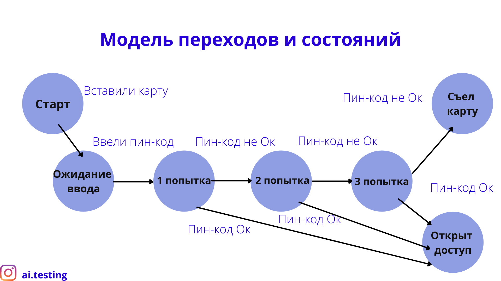
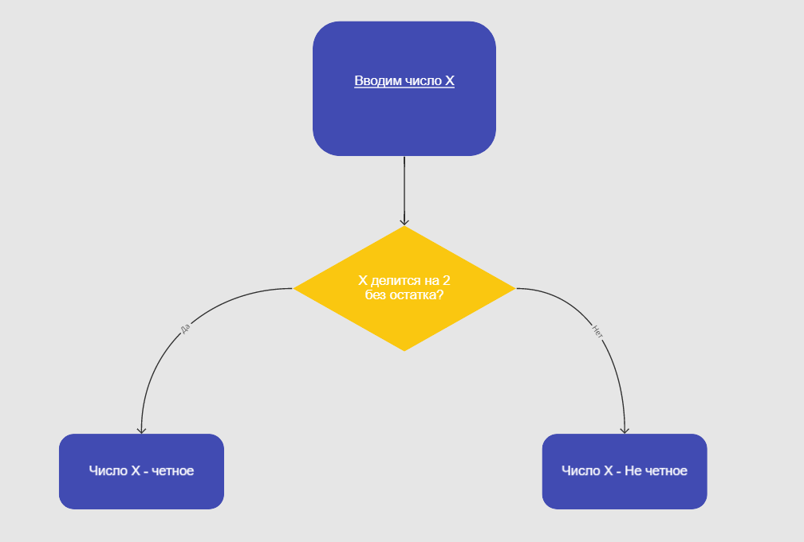

Тест-дизайн и тест-кейс
При обсуждении жизненного цикла тестирования мы говорили, что есть такие стадии, как анализ и создание тестов. Действительно перед тем как выполнять тесты, необходимо понять, какие функции и атрибуты продукта нужно проверить, при каких условиях выполнять эти проверки, какие использовать данные и каким должно быть ожидаемое поведение продукта.
После того как на основе требований продукта мы определились с проверками, стоит отсортировать и убрать из списка лишние, применяя тут принцип полного тестирования. Для этого необходимо использовать техники дизайна тест-кейсов.
Эти техники помогают определить наиболее релевантный список тестов из общего набора возможных. Каждая из этих техник подразумевает набор правил, следуя которым тестировщик определит список необходимых проверок и составит набор тест-кейсов.
Важный момент, который следует учесть при разработке тестов на этом этапе, — это их прослеживаемость. Что это значит? Это значит, что каждый тест идентифицирован и его можно легко связать с требованием, для которого он был разработан. Это нужно для того, чтобы при изменениях какой-то функциональности в продукте, можно было быстро и легко исправить написанные для неё тесты. Или, например, при новой версии продукта некоторые тесты заканчиваются неудачно, хотя раньше они проходили успешно. Нужно определить, для какой функциональности написаны эти тесты, для чего и нужна прослеживаемость.
Ещё важно на этом этапе приоритизировать список необходимых проверок, это даёт возможность уделить большее время для разработки тестов для важных функциональностей.
Итак, тест-дизайн — это процедура разработки тестов: тест-кейсов, чек-листов. В ходе курса мы уже упоминали, что такое тест-кейс — это набор действий, входящих данных, а также условий, в которых должен проходить тест, и ожидаемое поведение приложения.
С чего начинается разработка тест-кейса? С определения условий и данных, необходимых для проведения теста. Условиями могут быть окружение, где проводится тест, версия и браузер, в котором работает приложение, база данных, к которой необходимо подключиться. Входные данные — это данные, которые приложение будет использовать для выполнения функций, например данные пользователя при авторизации в приложение. Для тест-кейса необходимо четко прописать, какой пользователь требуется для авторизации, или что для заполнения формы на расчёт суммы кредита необходимы данные клиента. Причём не стоит указывать конкретные данные, нужно их описание, роль, права, потому что тест-кейс разрабатывается не на один раз, и использовать всегда одни и те же данные неэффективно. Например, выполняя тест на заявку кредита клиенту банка, не указываем “Иванов Иван Иванович, 1990 г.р. и с заработком 30 тысяч рублей”. Указываем, например, так: для теста необходим клиент банка (который уже обращался в банк для оформления продуктов) с уровнем дохода не меньше N тысяч рублей.
Для тест-кейса обязателен точно определённый ожидаемый результат, иначе нельзя сказать наверняка, насколько успешно прошел тест. Ожидаемый результат — это описание тех действий и результатов, которые должен увидеть тестировщик по окончании теста (например, информация на экране, ответ от сервера пользователю, изменение даты и суммы, изменение состояния кнопки). Или можно прописывать ожидаемый результат на каждый шаг прохождения.
Другая часть тест-кейса — это шаги выполнения теста, то есть подробная инструкция необходимых манипуляций в приложении для достижения ожидаемого результата.
Когда тест-кейсы написаны, их можно и нужно приоритизировать на основе приоритета проверяемых функций.
Их также можно структурировать в наборы, так называемые тестовые скрипты (Test Script или Test Suite). В чем польза такого разбиения? Во-первых, оно сокращает время на прохождение тестов. Некоторые тесты имеют одинаковый набор входящих данных и могут выполняться последовательно. Например, необходимо рассчитать сумму кредита для нового клиента банка. Первый тест заводит клиента в банковскую систему и проверяет его на надёжность. Второй тест — расчёт суммы кредита для этого клиента, т. е. тут не нужно сначала заводить клиента, тест использует клиента из предыдущей проверки. Во-вторых, некоторые наборы тестов можно проходить параллельно, что, помимо сокращения времени, даёт возможность быстро выполнить наиболее приоритетные проверки. Ну и в-третьих, тест-кейсы можно объединить в наборы часто используемых тестов, таких как smoke и sanity или регрессионное тестирование. Для каждой новой версии продукта берём конкретный набор и проводим проверку.
Итак, давайте подытожим основные атрибуты хорошего тест-кейса.
- Его идентификатор — уникальный номер, чтобы можно было определить, откуда этот тест-кейс родился.
- Его приоритет — показатель, демонстрирующий важность тест-кейса.
- Условия - настройки окружения и входные данные для теста.
- Шаги тест-кейса — подробный понятный алгоритм действий для выполнения этого теста.
- Ожидаемый результат — поведение системы, которое ожидаем после манипуляций с ней в данном тесте.
Ещё важно, чтобы у тест-кейса было краткое, но понятное заглавие, по которому можно легко понять, что именно будет проверяться в данном случае.
Как и где оформлять тест-кейс, решает каждая команда, стандартизированного шаблона нет. Кто-то ведёт их в виде таблиц в Excel или на Confluence, кто-то в специальных инструментах, например в Zephir, TestRail.
Теперь поговорим о чек-листе. Это упрощённый список необходимых проверок для продукта. Можно запомнить его, ассоциируя со списком покупок. В нём вы пишите по порядку, какие части программы и какие случаи нужно проверить и тому подобное. По сути, в нём две-три колонки: пункт проверки, его приоритет и статус или результат, который заполняется по ходу тестирования, прохождение проверки и результат прохождения. Если у вас короткий проект с несложным функционалом, вполне может хватить чек-листов, ну или у вас ограничено время на тестирование и некогда расписывать длинные конкретные тест-кейсы. А вот если все же нужна конкретика и чёткость, тогда пишем тест-кейсы.
К тестовой документации еще можно отнести use case или вариант использования — это высокоуровневый документ, в котором описано действие пользователя в программе. Например, пользователь должен иметь возможность регистрироваться в программе, просматривать товары, складывать их в корзину и совершать покупку. На основе таких списков пользовательских действий вы формируете список тестов.
Для чего важна и нужна документация на проекте? Для порядка. Если не вести такую документацию правильно и не поддерживать её в актуальном состоянии, через какое-то время вы не сможете в ней разобраться, не сможете доказать, работала ли раньше у вас функция, которая сейчас не работает, например. Во-вторых, эта документация демонстрирует команде и заказчику, как проходит тестирование, сколько функционала протестировано и сколько ещё осталось, какие функции реализованы хуже, а значит, в них наблюдается больше проблем. В-третьих, документация помогает эффективно работать, т. е. любой участник или новичок с документацией быстрее разберётся, что к чему и как тут всё работает.
Ещё пару слов про тестовую документацию. К ней относятся не только документы для разработки тестов, но и баг-репорт, и тест план, и стратегия, ну и требования к продукту.
Техники Статического тестирования
Мы уже знакомились в курсе со статическим тестированием. Так вот, умение использовать его в работе дает хорошую возможность для улучшения качества продукта. Статическое тестирование нацелено на проверку любой документации на проекте или кода продукта, чтобы обнаружить дефекты как можно раньше. Дефектами на этом этапе могут быть: отклонение от стандартов при составлении документации и дизайна продукта или пропущенное условие в требованиях, либо неоднозначное требование.
Техники статического тестирования — не замена динамическому, это эффективное дополнение к общему тестированию продукта. Оно помогает в дальнейшем сократить время на динамическое тестирование. Так как, подключаясь на ранних стадиях разработки продукта, тестировщику легче сформировать понимание того, что придётся тестировать, задать интересующие вопросы, потому как коллеги в этот момент времени находятся в контексте задачи и могут быстро и легко найти ответы. В это время также можно подумать над стратегией тестирования, набросать какой-то план для себя. Соответственно, это сократит время самого тестирования и добавит время на выполнение самих проверок, потому что уже не придётся тратить его на понимание задачи и выявление сути. Одна из самых эффективных техник — это рецензирование (от англ. review). Оно может быть как формальным, так и неформальным. Цели такого анализа документации:
- обеспечить общее понимание для команды и ключевых заказчиков описанного в документации продукта или процесса;
- найти дефекты и исправить их как можно раньше;
- провести проверку на соблюдение стандартов и форматов при разработке продукта.
Важно подойти к этому процессу серьезно, даже если это неформальный процесс. Не стоит просматривать требования как газету по диагонали.
Формальное рецензирование соблюдает формальный процесс, который состоит из нескольких основных стадий. Мы не будем подробно останавливаться на каждой стадии, просто обговорим их для знакомства и понимания процесса
- Первая стадия рецензирования — планирование (Planning). Оно начинается, когда автор документации или версии кода подаёт так называемый запрос на review, говоря тем самым: “Моя работа на этом этапе закончена, пожалуйста, проведите рецензирование, чтобы я смог исправить обнаруженные проблемы”. Координатор — человек, отвечающий за весь этот процесс — устанавливает график, стратегию и участников для данного рецензирования. В неформальном рецензировании такой этап тоже присутствует, хоть и проходит намного проще.
- Начало рецензирования (Kick-off) — это стартовая встреча всех заинтересованных в рецензировании участников, где обсуждаются цели и стратегии процедуры.
- Подготовка (Preparation) — участники проводят рецензирование документации и все возникшие проблемы, ошибки и опечатки фиксируют в определённом месте.
- Встреча по окончании рецензирования (Review meeting) — встреча, где происходит обсуждение обнаруженных проблем, выставление им приоритета критичности и оценка результатов в целом.
- Внесение изменение (Rework) — автор документа или кода вносит исправления согласно результатам рецензирования.
- И итоговая проверка (Follow-up) — участники, ответственные за рецензирование, проверяют работу автора по исправлению, если все исправления внесены верно, работа принимается.
Неформальное рецензирование проходит примерно также, исключая некоторые стадии: 1) автор подаёт запрос на review; 2) участник, проводящий review, как правило, понимает, что необходимо проверить, вносит свои комментарии для исправления проблем, если их обнаруживает, возвращает работу автору; 3) после финальных исправлений тот же ревьюер ещё раз проверяет, всё ли было исправлено и принимает работу, разрешая документу или коду двигаться по процессу дальше.
Один и тот же документ может проходить разные типы рецензирования. У каждого типа есть свои цели и характеристики. Выбор того или иного типа рецензирования зависит от самого проекта, количества свободных ресурсов и времени.
Давайте разберем основные типы рецензирования.
- Прохождение (Walkthrough) — участник рецензирования идёт по документу вместе с автором для того, чтобы все участники поняли его суть и дали обратную связь автору.
- Техническое рецензирование (Technical review) — рецензирование документа по техническим аспектам, проводится техническими специалистами.
- Инспекция (Inspection) — наиболее формальный тип рецензирования, проводится строго по процессу, соблюдая все правила.
И в завершении темы несколько слов о том, как можно использовать технику рецензирования непосредственно в тестировании, когда ты ещё новичок и только учишься. При создании набора тестов или просто списка пунктов для проверок можно попросить старших коллег или наставника сделать неформальное ревью для того, чтобы не пропустить важных моментов при проверке и вообще получить фидбек о проделанной работе.
Техники тест-дизайна. Чёрный ящик.
Теперь приступим к изучению самих техник. В принципе, техники делятся на три категории: 1) основанные на требованиях к продукту, более поведенческие техники (specification-based), они же называются тестированием с помощью чёрного ящика (black box), 2) основанные на структуре продукта (structure-based) или его коде, они еще называются тестированием с помощью белого ящика (white box) и 3) основанные на пользовательском опыте. Каждая из техник имеет свои преимущества и недостатки, но каждая способна находить конкретные типы дефектов при тестировании.
Согласно первой технике, мы представляем программу как чёрный ящик, о содержимом которого мы ничего не знаем, т. е. не знаем, как устроены компоненты программы, какой код там используется, какие алгоритмы задействованы, как происходит взаимодействие между компонентами и самой программой с другими системами. Мы имеем только набор входящих данных и условий для выполнения и знаем результат на выходе. С помощью таких техник мы строим тесты, которые проверяют, что делает программа, но не каким образом. Например, необходимо проверить сложение двух чисел: мы имеем 2 + 2 и должны на выходе получить 4. А о том, как происходит сложение внутри программы, нам знать не нужно.
Black-box техники можно применять для любого уровня тестирования, полагаясь на документацию. Таких техник несколько: классы эквивалентности, анализ граничных значений, таблицы решений, модели переходов и состояний и пользовательские кейсы.
Итак, первая техника — разбиение на классы эквивалентности. Она практически всегда используется первой, тестировщики даже неосознанно начинают её использовать при тестировании. Однако, с ней нужно познакомиться формально, чтобы использовать по максимуму все её плюсы. Суть такой техники в том, чтобы разбить все необходимые тестовые проверки на такие классы, которые можно воспринимать, как одно целое. Другими словами, мы подразумеваем, что для каждого пункта из класса функции приложения будут выполнены одинаково. Проводим для всего класса только один тест, и если он проходит успешно, подразумеваем, что тест будет успешен также для всех остальных пунктов. И наоборот, если тест неуспешно выполняется для одного пункта, подразумеваем, что функция не будет работать ни на одном другом пункте из этого класса.
Для наглядности рассмотрим простой пример: наша программа начисляет бонус в зависимости от того, какая сумма лежит на счету клиента. Если баланс клиента от 0 до 1000 рублей, начисляем 1%; если от 1000 до 5000, начисляем 3%; и если больше 5000, начисляем 5%. Какие классы эквивалентности стоит рассмотреть в этой ситуации:
- Баланс от 0.00 до 1000.00 - 1%
- Баланс от 1000.01 до 5000.00 - 3%
- Баланс от 5000.01 и выше - 5%
- И баланс меньше 0.00, т е до -0.01 - процент не начисляется.
Обратите внимание, что мы выделили четыре класса эквивалентности, а не три, как было заявлено в требованиях. Мы выделили 4-ый класс невалидных/недопустимых значений. Это важный пункт, потому что проверить только как должен работать продукт при хороших условиях, недостаточно. Важно ещё проверить, как поведёт себя продукт, если подать на вход ему недопустимые данные. Вот это — наглядный пример того, что только позитивного тестирования недостаточно, важно помнить про негативные проверки. Таким образом, при разработке тест-кейсов, необходимо учитывать все классы разбиения. В нашем примере минимальный набор тест-кейсов будет состоять из четырёх штук, и входными параметрами для каждого могут быть любые значения баланса, находящиеся в пределах этого разбиения.
Как бы мы могли тестировать эту функцию без знания о технике разбиения на классы? Можно интуитивно подойти и тестировать, например, каждые 100 или 250 рублей. Тогда получатся следующие тесты: 0, 250, 500, 750, 1000, 1250, 1500, 1750 — восемь тест-кейсов и всё в приложении работает хорошо. За восемь тест-кейсов можно устать и остановить тестирование с выводом о хорошем качестве. Однако, в этом случае получается, что мы проверим только два класса эквивалентности и не найдем потенциальных багов для двух других классов. В то же время мы потратим в два раза больше времени на прохождение этих восьми кейсов, чем потратили бы при использовании техники разбиения.
И в конце пару слов про невалидные значения. Когда мы объявляем класс невалидных значений, это не значит, что они в принципе не могут использоваться в приложении, пользователь может легко ввести такие значения в поля ввода. Приложение должно корректно обрабатывать такие ситуации, реагируя сообщением, которое даёт пользователю понять, что он ввёл недопустимые значения для этого поля.
Вторая техника, которую мы рассмотрим на этом уроке, — это техника анализа граничных значений. Она основана на проверке граничных значений классов разбиения. Простой пример для наглядности: есть поле ввода и кнопка. Пользователь вводит число в поле ввода, нажимает на кнопку и она становится зеленой или красной, в зависимости от того, допустимое значение ввели или нет. Допустимые значения: от 1 до 99. Так вот, используя технику разбиения мы обнаружим три класса эквивалентности:
| 0 | 1 - 99 | 100 |
|---|---|---|
| Недопустимо | Допустимо | Недопустимо |
- Меньше 1 - кнопка красная
- От 1 до 99 - кнопка зеленая
- Больше 99 - кнопка красная.
Что же будет являться граничными значениями? Для валидного класса граничные значения, очевидно, — 1 и 99. Для невалидных классов только одно граничное значение, т. к. классы не ограничены с двух сторон. Для первого это 0, для второго 100.
Получается, в этом примере мы должны написать три тест-кейса на классы эквивалентности и четыре тест-кейса на граничные значения.
Вернемся к примеру с начислением бонусов. Там граничных значений больше, так как классов больше: шесть тест-кейсов для граничных значений. А если проверять каждые 250 рублей, то только два граничных значения, 0 и 1000, будут рассмотрены, а значит велика вероятность пропустить дефекты.
Теперь вернёмся к неограниченным классам. В примере с бонусом у нас последний класс неограничен максимальным значением. Это не значит, что стоит проигнорировать этот момент и не тестировать его. Открытую границу немного сложнее тестировать, однако есть рабочие подходы для этого. Сначала надо погрузиться в суть этого поля, у нас это поле баланса клиента. Каким максимальным может быть баланс наших клиентов? Можно для начала обратиться к функциональным и бизнес-требованиям продукта, поискать информацию о максимально допустимом значении баланса. Второй способ — обратиться внутрь системных компонентов, где используется это поле. Например, можно найти информацию у разработчиков о том, на сколько значений рассчитано это поле. Допустим, оно может содержать шесть цифр и две после запятой, тогда предполагаем, что максимальная граница для этого класса 999 999.99 рублей. Если подобной информации найти нигде не удаётся, используем опыт, пытаемся найти такое большое значение, для которого программа может дать сбой. Опять же, тут не стоит тратить много усилий на проверку, например, каждой сотни или тысячи, можно, в частности, проверить порядок: 10 000, 100 000, 1000 000.
Используя обе эти техники вместе, можно составлять таблицу, по которой легко отслеживать ход тестирования и не забыть важные проверки.
Эти техники также подходят для тестирования не только числовых значений или даты и времени, но и применимы к другим значениям. Например, необходимо протестировать возможность выбора типа билета: эконом, бизнес или первый класс — вот три класса разбиения.
В другом случае, если при прохождении теста с каким-либо значением из класса разбиения обнаруживаем дефект, его необходимо проверить на нескольких других значений из этого класса. Если случается так, что для этих значений поведение программы отличается, возможно, было неправильно произведено деление на классы, и стоит провести более тщательный анализ для разбиения. Ну а если поведение одинаковое и отличается от ожидаемого — смело фиксируем баг.
Что же касается самой разработки тест-кейсов, некоторые из них, чаще всего позитивные, можно объединить в один тест, определив условия, которые необходимо проверить. Однако, если тест пройдет неуспешно, надо будет более детально разбираться в том, для какого именно условия произошел сбой. Поэтому важно научиться соблюдать баланс между покрытием слишком большого количества условий в одном тесте и слишком маленького количества. Кроме того, некоторые классы разбиения внутри можно разделить на другие классы по другому признаку.
Вернемся к нашему примеру с бонусом. Допустим эти бонусы могут получать как клиенты, зарегистрированные в нашей системе, так и вновь пришедшие, или, например, клиенты с двумя и более счетами. Получается, помимо проверки начисления бонусов в пределах класса необходимо ещё выполнить проверки для разных клиентов.
Итак, эти техники дают возможность составить довольно приличный набор тест-кейсов, способных обнаружить дефекты. Однако как выбрать, какие тесты выполнять в первую очередь, какие позже, а какие вообще не выполнять в условиях ограниченного времени? Если цель тестирования — тщательная проверка функциональности, то стоит начинать с валидных классов эквивалентности, затем рассмотреть невалидные классы, и после — валидные и невалидные граничные значения. Если время ограничено и есть необходимость проверки наиболее распространённых пользовательских действий, выполнять стоит тесты только из валидного класса разбиения. Если необходимо найти как можно больше дефектов за ограниченное время, стоит начать с граничных значений, допустимых и нет. А если, например, необходимо проверить, как программа обработает неверные данные для входа, выполним тесты со значением из недопустимых классов и границ.
В этой части осталось рассмотреть ещё три техники создания тест-кейсов на основе требований. Если первые две техники можно использовать для отдельных ситуаций или конкретного поля ввода, то оставшиеся позволяют разработать тест-кейсы для сложных пользовательских сценариев, когда нужно учесть сразу несколько условий. Так вот, эти техники основаны больше на бизнес-логике и бизнес-процессах продукта.
Первая техника, которую мы начнем изучать, — таблица решений. Тестирование комбинаций довольно сложный и трудоёмкий процесс, а число комбинаций может быть огромным, что, конечно, же невозможно протестировать полностью. Работа с такой таблицей помогает найти качественный способ выбора комбинаций, которые должны быть протестированы, плюс она выявляет двусмысленность и ошибки в требованиях.
Первое, что нужно сделать для составления таблицы решений, — определить функцию, которая будет тестироваться в тех или иных условиях. Затем определяем входные условия и данные для работы этой функции, далее составляем таблицу всех возможных комбинаций.
Давайте разберемся с примером: упрощенная функция обработки пользовательских данных для кредитной заявки, где пользователь вводит ежемесячную сумму платежа или желаемый срок кредита. Приложение обрабатывает эти параметры и в дальнейшем подбирает кредитную программу.
Имеем два условия для входа: сумма платежа и срок кредита.
Прописываем их в строчки таблицы:
| Условия | ||||
|---|---|---|---|---|
| Введена сумма платежа | ||||
| Введен срок кредита | ||||
Затем заполняем столбцы таблицы, это правила — комбинации входных условий, которые необходимо проверить. Для двух условий будет четыре варианта группировки. Количество вариантов равно двум в степени числа, равному количеству группируемых условий. 2 в степени 2 равно 4.
| Условия | Правило 1 | Правило 2 | Правило 3 | Правило 4 |
|---|---|---|---|---|
| Введена сумма платежа | И | И | Л | Л |
| Введен срок кредита | И | Л | И | Л |
Значения столбцов бинарны, имеют два значения, и их можно обозначать, как Истина (И) и Ложь (Л). Значение Истина присваивается, когда условие выполняется, т. е. мы включаем его в тест, Ложь — когда условие не берем в расчет.
Дальше, чтобы собрать тест-кейс до конца, необходимо в таблице определить ожидаемый результат для каждого правила. В нашем примере возможен подбор кредитной программы на основе обработки ежемесячного платежа и/или обработки срока кредита.
| Условия | Правило 1 | Правило 2 | Правило 3 | Правило 4 |
|---|---|---|---|---|
| Введена сумма платежа | И | И | Л | Л |
| Введен срок кредита | И | Л | И | Л |
| Ожидаемый результат | ||||
| Происходит обработка суммы | Да | Да | ||
| Происходит обработка срока | Да | Да |
Затем необходимо заполнить столбцы нижней части таблицы, указать, для каких комбинаций входных условий будет происходить обработка суммы, а для каких — обработка срока. Приложение может обработать сумму, если пользователь указал её значение, соответственно, если указан срок — программа обработает его. Вот таким образом мы собрали таблицу решений для простого примера с двумя условиями входа, тем самым мы покрыли позитивные сценарии для нашей функции расчета. И как мы уже говорили, важно проверить негативные ситуации, чтобы убедиться в корректности обработки таких данных, поэтому-то и осталось одно правило без обработки. Тут мы должны проверить, корректно ли приложение обработает ситуацию, когда оба поля не заполнены. Для этого в ожидаемый результат добавляем строку с ошибкой, которую должна вывести программа пользователю в этом случае.
| Условия | Правило 1 | Правило 2 | Правило 3 | Правило 4 |
|---|---|---|---|---|
| Введена сумма платежа | И | И | Л | Л |
| Введен срок кредита | И | Л | И | Л |
| Ожидаемый результат | ||||
| Происходит обработка суммы | Да | Да | ||
| Происходит обработка срока | Да | Да | ||
| Выводится ошибка | Да |
После составления такой таблицы можно без труда составить тест-кейсы. В этом примере мы строили таблицу, начиная от входных условий, однако, часто бывают ситуации, когда сразу ясны результаты, и мы уже отталкиваемся от них, чтобы расписать условия для входа.
Давайте двигаться дальше и познакомимся с ещё одной техникой — это модели переходов и состояний. Эта модель представляет собой набор состояний, в которых может находиться программа, и набор переходов (правил, условий), по которым система может переходить из одного состояния в другое. Такую модель можно визуально представить как диаграмму состояний. Так вот у любой такой модели есть набор состояний, которые может занять программа; переходы от одного состояния в другое; события, которые являются причиной перехода; и действия, которые являются результатом перехода.

Давайте рассмотрим простой пример: ввод ПИН-кода для карты. Кружками обозначены состояния системы, их семь. Возможные переходы нарисованы стрелками, события/причины указаны рядом со стрелками, а возможными результатами будет являться открытый доступ к счету или изъятие карты. Вы можете строить настолько подробные диаграммы состояний, насколько вам необходимо и позволяют временные ресурсы. Системы или компоненты наиболее важные для тестирования могут быть проанализированы глубоко, другие же, наименее важные, могут обойтись парой состояний.
После построения диаграммы можно выбрать подход к составлению тест-кейсов, можно покрывать каждое состояние или каждый переход, или же комбинировать их. Опять же в данной ситуации мы построили валидный набор переходов и состояний системы. Как быть с негативными проверками, откуда их подобрать? Для этого можно воспользоваться таблицей состояний. В строках указываем возможные состояния системы, по столбцам — события, провоцирующие переходы. На пересечении строк и столбцов в ячейку записываем возможное новое состояние системы. При таком анализе состояний появятся ячейки, где неочевидно, в какое состояние перейдёт система, и это то узкое место, где стоит проверить поведение.
| Вставить карту | Валидный ПИН-код | Невалидный ПИН-код | |
|---|---|---|---|
| С1 Начальное состояние | С2 | - | - |
| С2 Ожидание пин кода | - | С6 | С3 |
| С3 1ая попытка неудачна | - | С6 | С4 |
| С4 2ая попытка неудачна | - | С6 | С5 |
| С5 3я попытка неудачна | - | - | С7 |
| С6 Пин код принят | - | ? | ? |
| С7 Карта съедена | С1 (для новой карты) | - | - |
Ячейки, обозначенные знаком вопроса, являются тем местом, где непонятно, как поведёт себя система. Например, может быть такой сценарий: ПИН-код принят и есть доступ к счёту, и очередная попытка ввода ПИН-кода будет принята, как запрос суммы на снятие. На такие моменты тестировщик должен обращать внимание и выяснять состояние и поведение системы при стечении таких обстоятельств.
Ну и последняя из техник черного ящика — это пользовательские кейсы (Use cases). Это техника, позволяющая разрабатывать тесты, основываясь на действиях пользователя в системе, проработать кейс от начала до конца. Такие кейсы называются end-to-end. Каждый кейс — это описание пользовательских действий для конкретного случая и поведения системы в ответ на действия пользователя. Пользователем может быть как человек, так и другая система, взаимодействующая с тестируемой. Пользовательский кейс состоит из набора последовательных действий пользователя и ответа системы на эти действия. Кроме того, должно быть описание входных условий для выполнения такого теста и конечного результата.

В данной таблице представлен пример пользовательского кейса для ввода ПИН-кода карты. Верхняя часть таблицы — это позитивный основной кейс, внизу же таблицы можно расписать так называемые расширения кейса.
Техника пользовательских кейсов применима на уровне системного приемочного тестирования.
Техники тест-дизайна. Белый ящик.
Белый, или стеклянный, ящик подразумевает проверку содержимого системы, при этом важно понимать, как система работает внутри, иметь доступ к коду.
Техники на основе белого ящика используются для оценки объёма тестирования, выполненного с помощью тестов чёрного ящика или других проведенных тестов. Вторая причина их использования — разработка дополнительных тест-кейсов с целью увеличения тестового покрытия. Поэтому техники белого ящика стоит использовать как дополнение к остальным техникам.
Какие бывают техники? Например, техники покрытия операторов (Statement coverage), когда проводим подсчёт покрытых операторов в коде, например условных операторов.
Дано число Х
Если Х / 2 = 0 То Число Х - четное
Иначе Число Х - Нечетное

Другой тип — техники покрытия решений или веток (Decision coverage). Для нашего примера достаточно одного тест-кейса для достижения стопроцентного покрытия оператора и двух тест-кейсов для покрытия решений.
В среднем техники черного ящика покрывают условия в коде на 60 -75 процентов. Используя белый ящик этот процент можно повысить.
Давайте разберемся с понятием “тестовое покрытие” (Test coverage). Это мера, которая определяет количество покрытых тестами элементов программного продукта. Элементом продукта в данном случае могут быть строки или ветки кода, функции или пункты меню в интерфейсе, права пользователей для использования продукта. Одним словом, всё, что мы можем протестировать.
Как же посчитать процент покрытия тестами элементов продукта? Считаем отношение количества протестированных элементов к общему количеству элементов и умножаем на сто процентов.
Покрытие = (Количество протестированных элементов / Общее количество элементов ) * 100%
Однако стопроцентное покрытие, подсчитанное таким образом, не даёт уверенности в стопроцентном проведении тестирования. Например, два разных набора тест-кейсов могут дать одинаковое покрытие, но входные условия для одного могут найти ошибку, а для другого — нет.
Покрытие можно считать по-разному. Есть несколько типов покрытия, определённых на каждом уровне тестирования. Например, на компонентном уровне можно посчитать процент покрытых тестами компонентов и функций каждого. На системном или приёмочном можно отталкиваться от бизнес-процессов и считать их процент покрытия. Помогают также посчитать покрытие техники черного ящика, например сколько классов эквивалентности протестировано или сколько состояний программы из модели состояний и переходов.
Техники на основе опыта.
В конце этой темы рассмотрим неформальные техники тестирования на основе знаний и опыта. Хотя их, наверное, не назовешь техникой, потому что здесь фундаментом для тестов являются опыт, знания, интуиция и фантазия тестировщика, от этих же факторов зависит и успех обнаружения проблем в ПО. Первый подход к такому тестированию называется угадывание ошибок (Error guessing). Здесь нет определённых правил и систем, в этом случае рекомендуется подумать о ситуациях, с которыми программа может не справиться и столкнётся с проблемами. Например, деление на ноль, не заполненное обязательное поле ввода, загрузка пустого файла и файла такого типа, который редко встречается. Следует записать эти ситуации и оформить в виде тестов.
Второй подход — исследовательское тестирование (Exploratory testing) — практический, где тестировщик по максимуму вовлечён в выполнение тестирования. Производится небольшая запись того, что протестировано, какие проблемы были обнаружены. Вообще, цель исследовательского тестирования — изучить ПО, что оно выполняет и что не работает в нём. После этого складывается понимание того, что нужно тестировать дальше и сколько отвести на это времени. Такой подход хорош, когда на проекте немного документации с требованиями или когда время ограничено.
Конечно же, эти подходы не являются заменой формальным техникам тестирования, они только хорошее дополнение.
Итак, в этой части курса мы познакомились с основными техниками тест-дизайна. И неверно будет задавать вопрос — какая техника лучше? Они все хороши, каждая для своего применения.